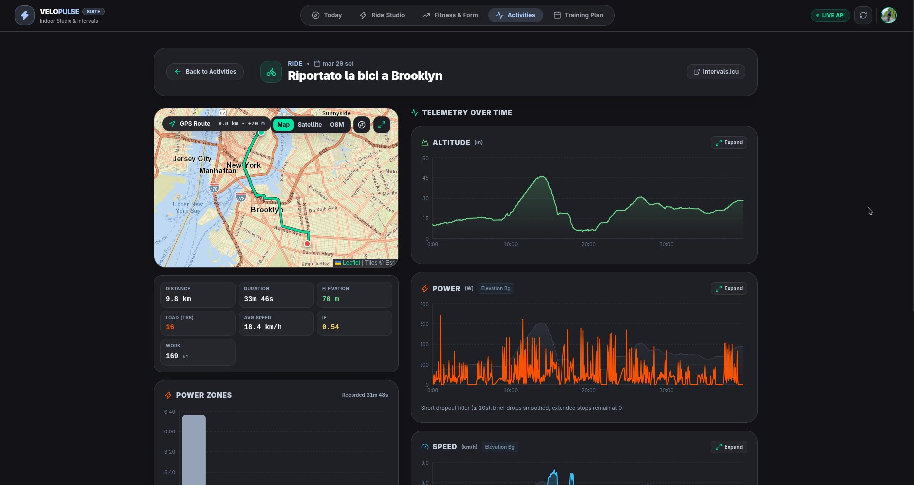
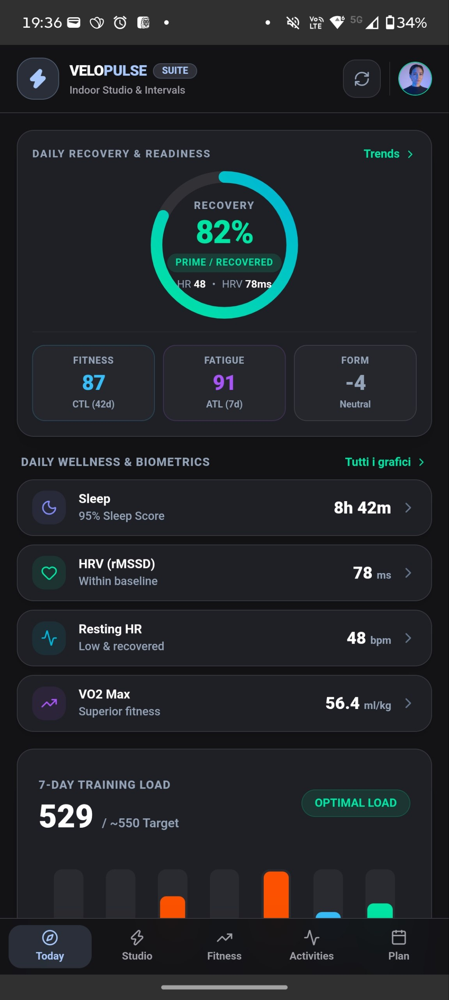

4 stylized 3D worlds & landmarks
Ride through Valley, New York, Rome, or Paris—complete with the Empire State Building, Statue of Liberty, Colosseum, St. Peter's Dome, Eiffel Tower, and glowing illuminated buildings at night.
3D indoor cycling studio + performance analytics
VeloLab pairs a lightweight, full-screen 3D virtual road engine and frameless telemetry HUD with pro-grade cycling analytics. Pedal through New York, Rome, Paris, or an alpine valley with automatic ERG control—then explore interactive GPS maps, power zones, and 180-day fitness trends.

3D Ride Studio & visual design
No heavy multi-gigabyte downloads or noisy overlays: VeloLab renders stylized, low-poly 3D worlds right in your browser with clean, high-contrast typography at the edges so the road and your target power stay effortless to read.
Ride through Valley, New York, Rome, or Paris—complete with the Empire State Building, Statue of Liberty, Colosseum, St. Peter's Dome, Eiffel Tower, and glowing illuminated buildings at night.
Borderless floating metrics with crisp drop shadows keep live power and target watts readable on any sky. Toggle Eco mode for ultra-low GPU usage, press H to hide the HUD, or switch to Classic view anytime.
Your 3D road cyclist pedals in sync with your real speed and shares the road with overtaking NPC riders. Start pedaling on your FTMS trainer and the session launches automatically.
Browse structured sessions by category with mini power-profile previews or drop in any Zwift .zwo file. VeloLab controls ERG wattage automatically for every interval.
Every ride generates a .fit file with a real scenic GPS route map, saves permanently inside VeloLab with duplicate protection, and uploads to Intervals.icu in one click.
While you ride, VeloLab shows live how much anaerobic reserve (W') you have left, so you can manage efforts above threshold.
The activity page
Every activity has a page with the GPS route map and charts over time for elevation, heart rate, power and cadence. Next to them you find the time spent in each zone and aerobic decoupling, that is how much your heart rate drifts up at constant power.
The highest power you can hold for a long time before you have to ease off.
How much energy you can spend above critical power before you run out.
VeloLab estimates CP and W' directly from your power duration curve.


Fitness analytics
VeloLab works out your fitness and your fatigue and shows how you recover between workouts.
CTL (fitness), ATL (fatigue) and TSB (form) tell you how much load you have built up and how ready you are to push.
A recovery ring based on heart rate variability (HRV), resting heart rate and sleep.
VeloLab tracks sleep duration and quality, heart rate variability (HRV), VO2max, and resting heart rate over time using only recorded metrics.
Connect Intervals.icu or Strava, import Garmin .fit files directly from your bike computer, or explore right away in demo mode.
Where it runs
VeloLab works on the web and as an installed app.


On a phone, a tab bar at the bottom takes you to Today, Studio, Fitness, Activities and Plan.
In three steps
Use VeloLab from your browser, or install the app for your system.
Connect your trainer and the Bluetooth sensors, or use the simulator to ride a workout without any hardware.
Sign in to connect Intervals.icu, Strava, or upload Garmin .fit files—or jump straight into demo mode with sample rides.